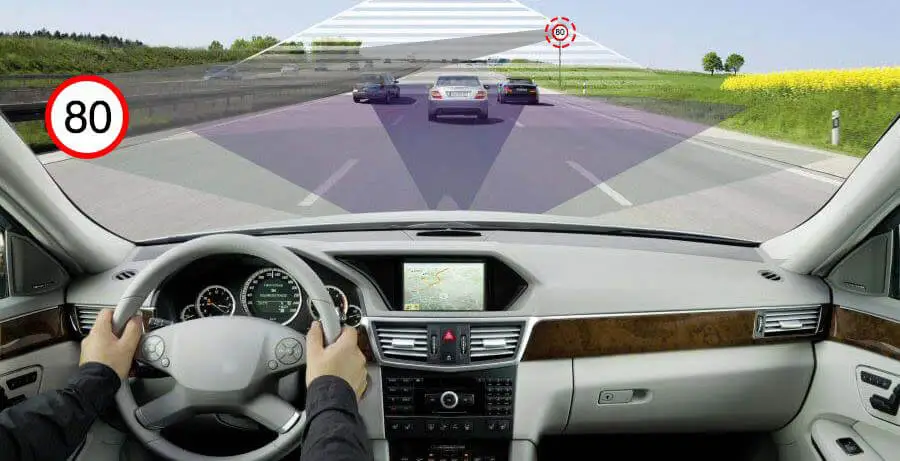

Abstract :
The use of deep learning models for traffic sign detection has become increasingly popular in recent years, particularly in the field of
autonomous driving. In this approach, a dataset of traffic sign images is collected and preprocessed, and a deep learning model, such as
a convolutional neural network (CNN),is trained on the data.The model is then evaluated on a test set and deployed in a real-world scenario.
By using deep learning models, traffic signs can be detected and recognized with high accuracy and speed, making them an ideal solution
for real-time applications. Traffic sign detection using deep learning models is a challenging but promising area of research that has the
potential to improve road safety and facilitate the development of autonomous driving technologies.
Output:
